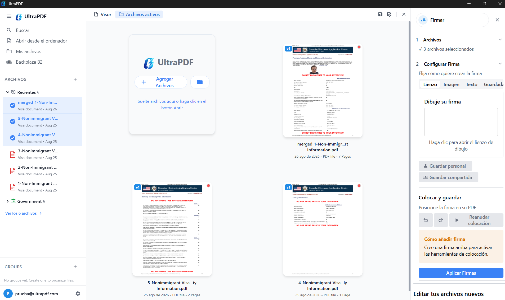
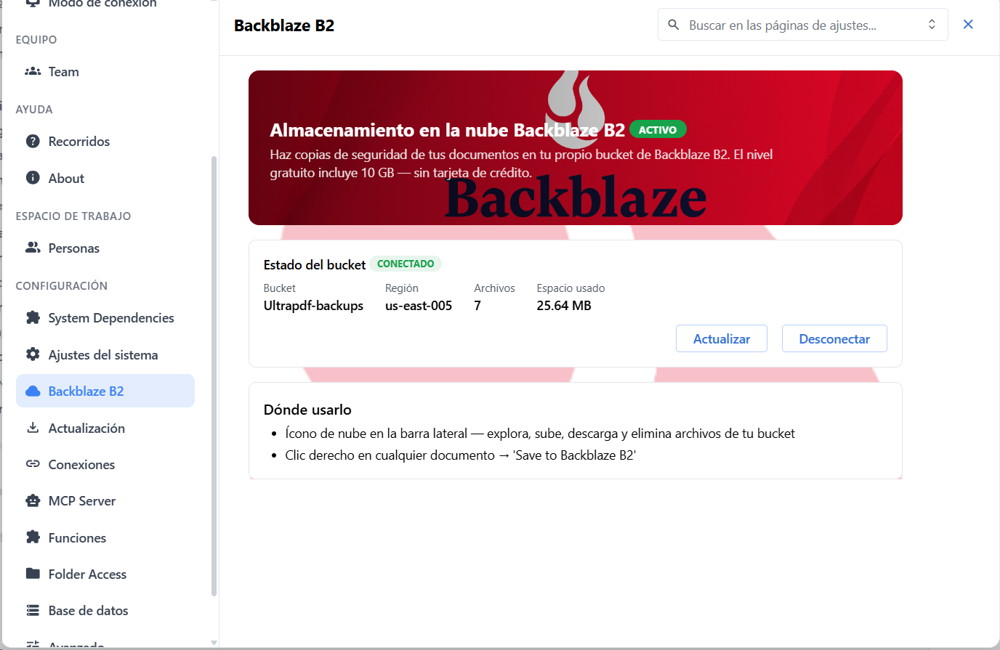

// LOCAL-FIRST
Tus archivos, tu control.
100% funcional sin conexión a internet. Tus documentos nunca salen de tu equipo. Sin rastreadores, sin analíticas, sin compromisos.
- Funciona sin conexión a internet
- Archivos nunca salen de tu equipo
- Sin rastreadores ni analíticas
- Licencia MIT — gratuito para siempre

// 55+ PDF TOOLS
Todo lo que necesitas. Nada que no.
De comprimir a OCR, de firmar a convertir. Herramientas profesionales que empresas pagan cientos de dólares por año. Aquí son gratuitas.
- Comprimir, dividir, combinar, convertir
- Firma digital y certificados
- OCR multi-idioma con Tesseract
- Flujos de trabajo automatizados

// CLOUD BACKUP
Copias en la nube. Backblaze B2.
Almacenamiento en la nube personal: copia de seguridad de tus documentos en tu propio bucket de Backblaze B2. El nivel gratuito incluye 10 GB — sin tarjeta de crédito.
- Bucket propio en Backblaze B2
- Clic derecho → "Save to Backblaze B2"
- 10 GB gratis sin tarjeta de crédito
- Explora, sube, descarga y elimina archivos



 logo.png)